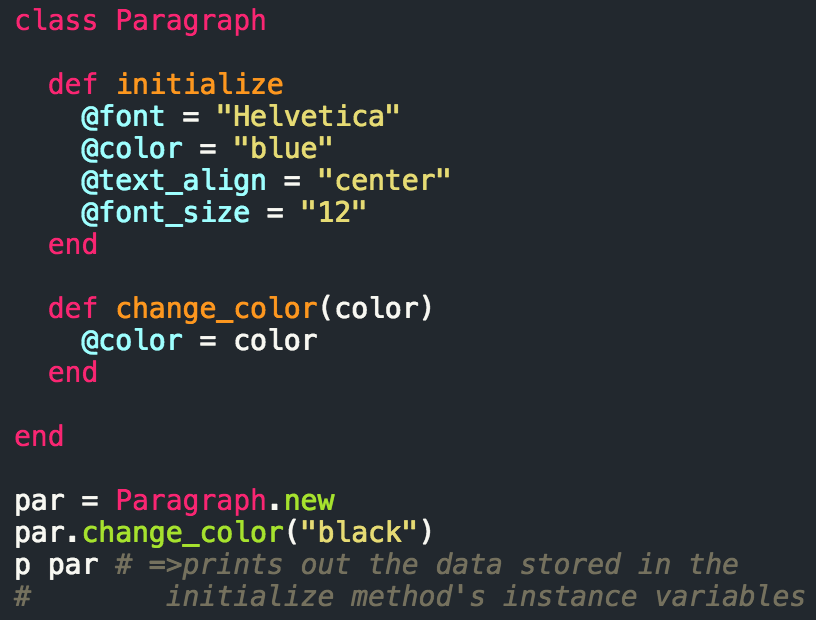
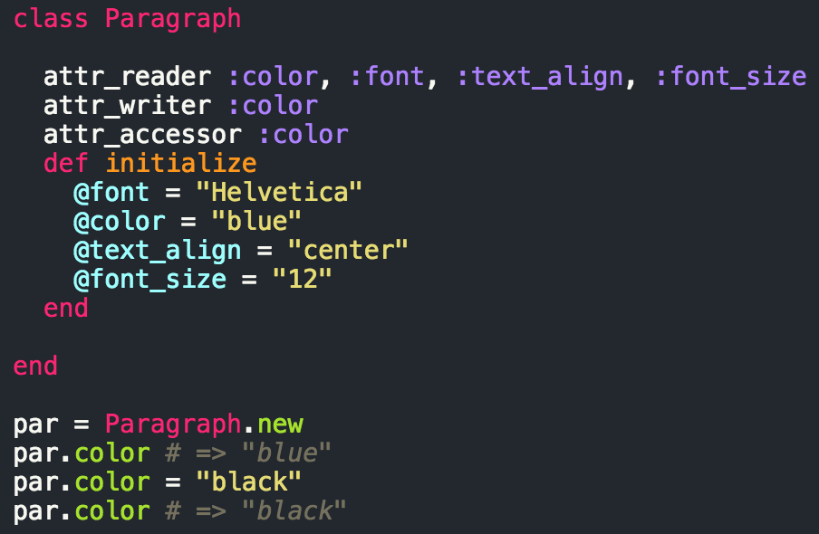

They really aren't though.
By now, you've probably heard a lot about how Ruby can be pretty intuitive in comparison to other langauges. Well that's because it really is! Admittedly, sometimes I'll even think that it can be so intuitive that it can be confusing whe, but in a good way. So to prevent further confusion, I'll try to keep my explanation about Ruby classes simple.
One thing I am going to shoot for with this explanation though, is a connection between Ruby and HTML & CSS. Why? Because if you already have some kind of working knowledge of something relatable to what you're learning then it makes learning a bit easier dontcha think?
Classes in Ruby are "the blueprint from which individual objects are created." In other words, classes are basically the framework or let's say, "base layer" for objects in Ruby. In HTML & CSS, we create classes for the HTML elements that we want to group together to have similar CSS properties. Well, think of classes in Ruby as a way of grouping similar objects. In the case of Ruby though, a class lays out the blueprint for one type of object or element if you will, whereas in HTML & CSS, a class can be assigned to multiple kinds of elements like paragraphs, headers, etc., so keep that difference in mind!
So let's make a paragraph class in Ruby real quick.
Notice how we have an initialize method in our class containing instance variables (the ones with the @ signs in front of them). Initialize methods essentially tell your program to "provide default values" to any new paragraph object that is created. So drawing the parallel to HTML & CSS, it's basically the same as assigning all paragraphs elements with the class "Paragraph" with the properties "font: "Helvetica" and so on. The other method, change_color, is a method we provide to only our Paragraph class here, which will allow us to change the our color value to whatever color we pass in as our argument.
So how is Ruby intuitive in this case? Well, take a look at the example below first.
Ruby has a built-in way of letting you set permissions so to speak, on "attributes." I may have to correct myself later on this, but essentially, think of "setting an instance variable as an attribute" as well, an attribute. If you look at the example, you'll see attr_reader, attr_writer, and attr_accessor. The first basically allows you to read or see what value's stored in the attributes you set to be readable, so color .. font (our instance variables) in our example. The second allows us to actually write over, or change our attribute values. Lastly, accessor is just a way of setting an attribute as readable and writable.
So why use attributes? Well, think of it as a way to refactor code and that should enough reason to use them dontcha think? Instead of having to define a method in a class that'll allow us to change or call the values of an instance variable, we can simply throw an "attr_reader", "attr_writer", or "attr_accessor" depending on what we're trying to do to save some lines of code while we're defining classes.
You might be thinking, "Well why not just use attr_accessor all the time?" Well, sometimes, you don't want people to be able to see everything you've got going on in your code, nonetheless change certain parts of your code, kind of like how you might want to hide certain things on your Facebook profile from future employers and friends. Just kidding. But you're probably thinking, "Oh crap, is there anything I should remove from my profile?" right now.